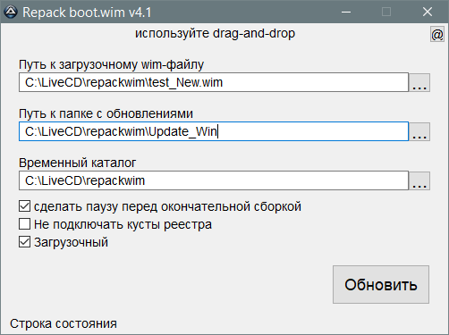

repackwim
Назначение
Перепаковка wim-файлов LiveCD с использованием wimlib.

Программа пересборки WIM-файлов, с использованием подготовленных обновлений. После нажатия кнопки "Обновить" получаем готовый загрузочный wim-файл, который копируем на флешку или в iso-образ. Не поддерживает многотомные wim'ы, для этого есть другая программа-скрипт работающая из контекстного меню.
Используйте drag-and-drop - это значит, что файлы и папки можно кидать в соответствующие поля программы.
Работа программы проверена из под загруженной LiveCD, в моей сборке и в RusLive, то есть в ней же загрузился в ней же её же wim-файл пересобрал, подменил WimPE.wim и в обновлённой загрузился, если что-то не так, то пересобираю тут же повторно.
Формат обновлений:
Для примера папки обновления смотреть папку Update.
reg - папка с любыми рег-файлами, с заголовками "Windows Registry Editor Version 5.00" или REGEDIT4. Любое количество рег-файлов, просто добавить в каталог и даже можно сортировать по подкаталогам. Вот ссылка http://forum.oszone.net/thread-127858-34.html где можно скачать твикер с большим количеством рег-файлов, нужные просто скопировать в папку reg и они все применятся в сборке.
root - папка добавляемых файлов, структура папок от корня wim, содержимое копируется как есть с заменой одноимённых файлов.
del - папка с файл-списками на удаление папок и файлов из WIM.
_deldir.txt - список ПАПОК, которые нужно удалить, путь от корня wim
_delfile.txt - список ФАЙЛОВ, которые нужно удалить, путь от корня wim
Имена файл-списков можно изменять, например Office_deldir.txt, но окончание имени файла менять нельзя. Это дало возможность иметь раздельные файл списки. Кроме того появилась возможность добавлять комментарии в файл список, пустые строки игнорируются, и неверные пути (они же комментарии) также игнорируются.
Совет: используйте каталог перепаковщика в корне диска, будет меньше проблем с ограничением количества символов пути (путь папки + пути в апдейте). Если каталог перепаковщика находится глубоко в папках, то возможные проблемы - не найдена метка wim, не копируются некоторые каталоги/файлы апдейта. Отсутствие утилит в папке tools тоже вызывает сообщение "не найдена метка wim".
Дополнительная информация
При использовании экспортированных файлов из реестра программа отсеивает ветви HKEY_USERS, HKEY_CURRENT_CONFIG, HKEY_LOCAL_MACHINE\HARDWARE, HKEY_LOCAL_MACHINE\SAM, HKEY_LOCAL_MACHINE\SECURITY, то есть эти данные не импортируются в реестр LiveCD.
замены ветвей во время импорта
"HKEY_CURRENT_USER" на "HKEY_LOCAL_MACHINE\PE_CU_DF
"HKEY_LOCAL_MACHINE\SOFTWARE" на "HKEY_LOCAL_MACHINE\PE_LM_SW
"HKEY_LOCAL_MACHINE\SYSTEM" на "HKEY_LOCAL_MACHINE\PE_SY_HI
"CurrentControlSet" на "ControlSet001
"HKEY_CLASSES_ROOT" на "HKEY_LOCAL_MACHINE\PE_LM_SW\Classes